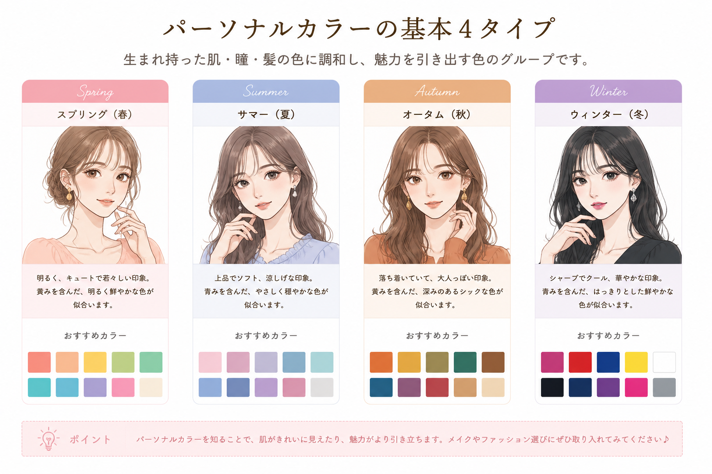
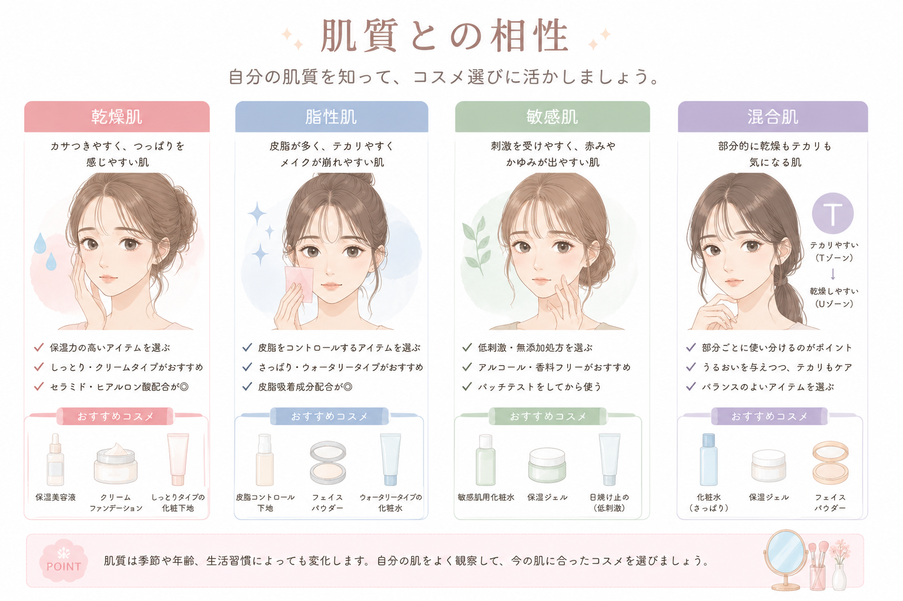
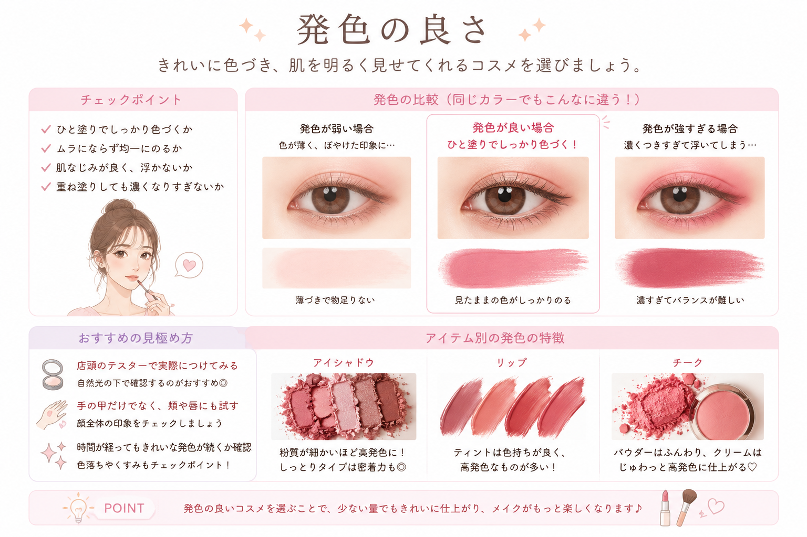
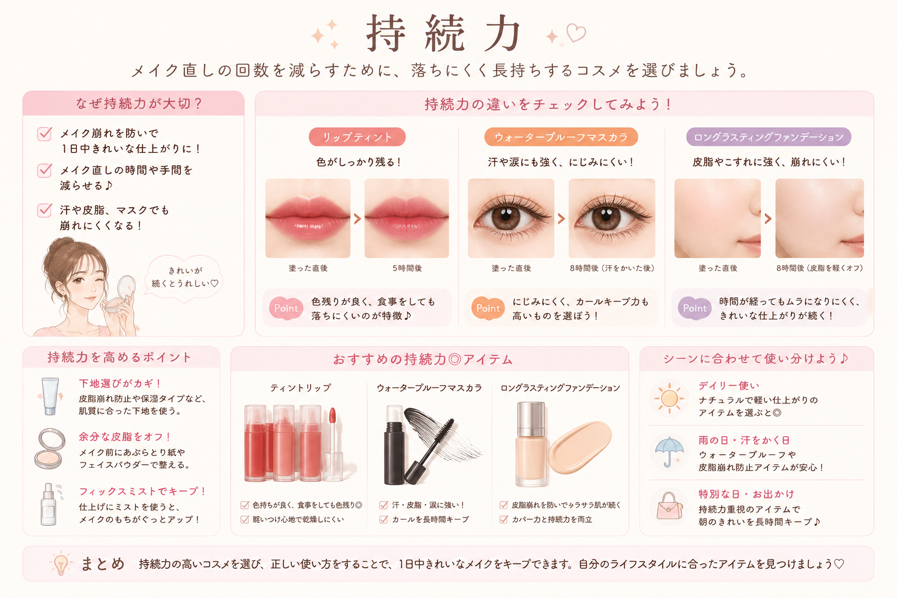
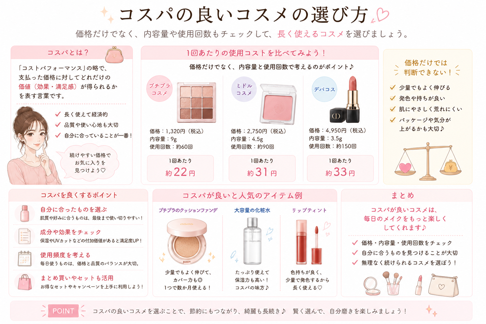
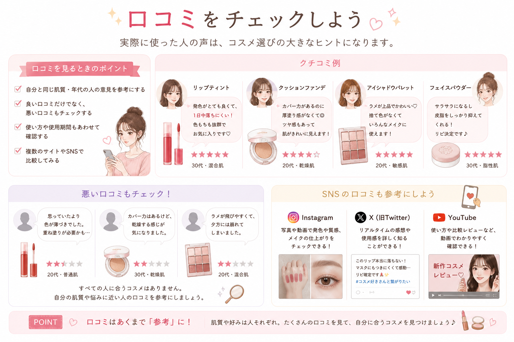

♡ Contents ♡
自分にあったコスメを選ぶためのポイントをまとめました。
パーソナルカラー

自分のパーソナルカラーに合うカラーを選ぶと、顔色がよく見えます。
肌質との相性

乾燥肌、脂性肌、混合肌など自分の肌質にあうコスメを選びましょう
発色の良さ

実際に試して、自分の好みの色味か確認することが大切です。
持続力

メイク直しの回数を減らしたい場合は、落ちにくいコスメを選ぶことが大切です。特にリップやファンデーションは持続力を確認して選びましょう。
コスパ

値段だけでなく、内容量や使用回数も考えて選ぶとお得です。自分が続けて使いやすい価格帯のコスメを選びましょう
口コミ

実際に使った人の感想を参考にすると失敗が少なくなります。ただし、肌質や好みは人によってことなるため、参考程度に確認しましょう